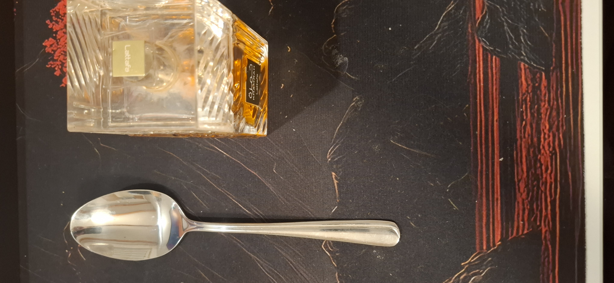
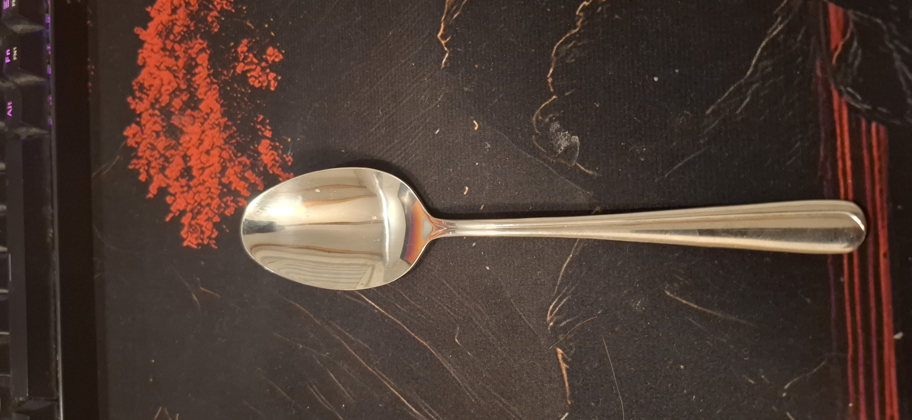
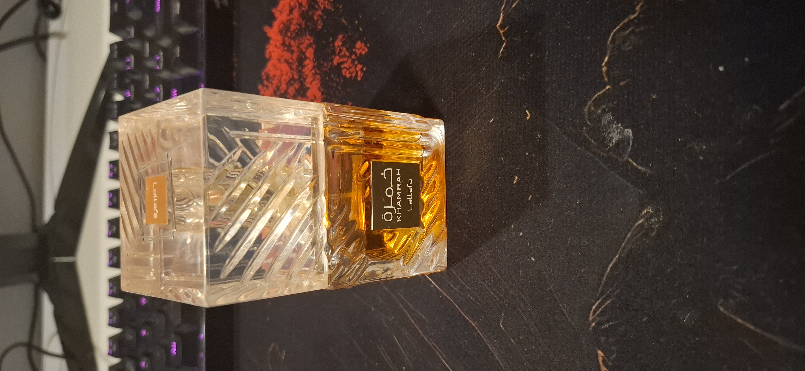
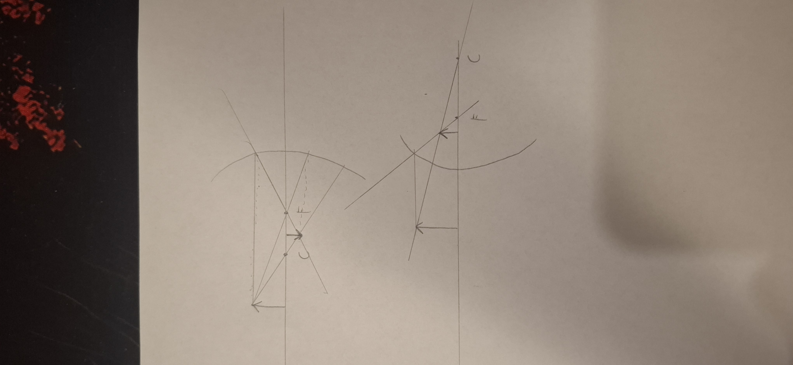

Pokus: Žlica kao sferno zrcalo
U ovom pokusu istražit ćemo kako se svjetlost odbija od zakrivljenih površina i zašto nam se slika u retrovizoru čini drugačijom nego u običnom ravnom zrcalu. Kao sferno zrcalo poslužit će nam obična metalna žlica.
Pribor
- metalna žlica (sjajna, glatka površina)
- predmet koji promatramo
- mobitel ili fotoaparat za snimanje

Slika 1. Predmeti korišteni u pokusu.

Slika 2. Sferno zrcalo (žlica).

Slika 3. Promatrani objekt.
Crtež pokusa

Slika 4. Put svjetlosti od predmeta do ispupčenog/zaobljenog zrcala i do oka promatrača.
Način izvođenja
- Mobitel postavimo na stalak ili naslonimo tako da mirno snima scenu.
- Žlicu učvrstimo tako da je ispupčena strana okrenuta prema kameri.
- Promatrani predmet stavimo na stol ispred žlice.
- Promatramo sliku predmeta u ispupčenoj (konveksnoj) strani žlice te ga postupno približavamo i udaljavamo od žlice.
- Zatim žlicu okrenemo i ponovimo postupak s udubljenom (konkavnom) stranom.
- Cijeli postupak snimimo mobitelom u dva dijela.
Video 1 — Konveksno(zaobljeno) zrcalo
Prvi dio videa prikazuje kako će izgledati slika udaljenog predmeta u konveksnom zrcalu. Što očekuješ?
Video 1 - refleksija svjetlosti na konveksnom zrcalu.
Video 2 — Konkavno(ispupčeno) zrcalo
Nakon što smo izveli pokus sa konveksnim zrcalom, sad slijedi konkavno. Možeš li zaključiti što će se desiti sa slikom predmeta u konkavnom zrcalu na temelju prije viđenog pokusa?
Video 2 - refleksija svjetlosti na konkavnom zrcalu